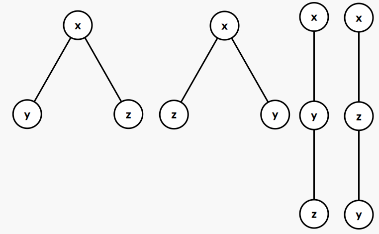
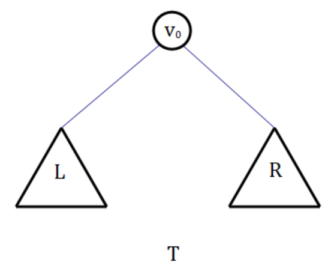

算法导论B.5 Exercises 答案
B.5-1
自由树和以\(x\)为根的有根树如下：

以\(x\)为根的有序树如下：

以\(x\)为根的二叉树如下：

B.5-2
由于存在\(v_0\in V,\forall v \in V\)，\(v_0\)到\(v\)都存在路径。因此\(G\)的无向图版本\(G'\)是一个连通图。
考虑使用反证法证明这是一棵树。假设\(G'\)中存在一个环\(\langle u_0,u_1,\dots,u_i,u_{i+1},\dots,u_k\rangle\)，其中\(u_0=u_k=u,u\in V\)。
那么，由于\(G\)是DAG，从\(v_0\)到\(u\)将有一条路径。那么同样的，从\(v_0\)到\(v_i,v_{i+1}\)都有各自的路径。

如图，虚线箭头\(u\rightarrow v\)表示这\(u\)从\(v\)有路径可达，实线箭头则意味着有一条有向边从\(u\)到\(v\)。
由于无向图\(G'\)存在环，考虑为边\((u_i,u_{i+1})\)标记上箭头。可见，如果标记的是\(u_{i+1}\rightarrow u_i\)，那么从\(u\)到\(u_i\)存在两条有向路径\(\langle v_0,\dots,u,u_1,\dots,u_i\rangle\)和\(\langle v_0,\dots,u,u_{k-1},\dots,u_{i+1},u_i\rangle\)，违反了路径中的唯一性；反之亦然。
因此，这个连通图\(G\)不应该存在环，因此\(G\)是一棵树。
B.5-3

假设\(F(T)\)是二叉树\(T\)中的\(2\)度节点数，\(G(T)\)是二叉树\(T\)的叶子节点数。那么问题转化成证明对于所有二叉树\(T\)，都有\(F(T)=G(T)-1\)。
考虑只有一个节点的树\(O\)，那么\(F(O)=0,G(O)=1,F(O)=G(O)-1\)成立。
以下分别按照两种情况归纳：
1
由上图构造出来的树中，左子树\(L\)或者右子树\(R\)为空。不失一般性，假设非空的是\(L\)。那么新构造的树\(T\)中，多了一个\(1\)度节点\(v_0\)。此时\(F(T)=F(L),G(T)=G(L)\)，仍有\(F(T)=G(T)-1\)。
2
新构造出来的树中，左子树\(L\)或者右子树\(R\)都非空。那么有\(F(L)=G(L)-1,F(R)=G(R)-1\)。那么新构造的树\(T\)中，多了一个\(2\)度节点\(v_0\)。那么\(F(T)=F(L)+F(R)+1,G(T)=G(L)+G(R)\)。
那么有：
\(F(T)=F(L)+F(R)+1=G(L)-1+G(R)-1+1=G(L)+G(R)-1=G(T)-1\)。
因此原结论成立。
假设\(I(T)\)是满二叉树\(T\)的内部节点数，\(J(T)\)是满二叉树\(T\)的叶子节点数。那么问题转化成证明对于所有满二叉树\(T\)，都有\(I(T)=J(T)-1\)。
考虑只有一个节点的树\(O\)（可以发现这是满二叉树）。那么\(I(O)=0,J(O)=1,I(O)=J(O)-1\)成立。
如果\(L,R\)都是满二叉树，那么如图构造的树\(T\)一定也是满二叉树。
目前已经满足\(I(L)=J(L)-1,I(R)=J(R)-1\)，考虑\(I(T)\)和\(J(T)\)的关系。
不难发现，\(v_0\)是\(T\)的内部节点，因此\(I(T)=I(L)+I(R)+1\)。而叶子节点数直接相加即可，因此有\(J(T)=J(L)+J(R)\)。
那么有：
\(I(T)=I(L)+I(R)+1=J(L)-1+J(R)-1+1=J(L)+J(R)-1=J(T)-1\)。
因此原结论成立。
B.5-4
本题将使用数学归纳法进行证明。假设构造出的\(k\)个叶节点的满二叉树为\(T(k)\)。
当\(k=1\)时，不难发现只有\(1\)个节点的树为满二叉树\(T(1)\)，此时恰有一个叶节点。
当\(k>1\)时，假设从\(1\sim k-1\)个叶节点的满二叉树都能构造出，考虑题目8.5-3中的图。令\(L=T(1),R=T(k-1)\)，那么节点\(v_0\)的度数为\(2\)，因此不是叶子节点。由\(v_0,L,R\)新构造出的树恰好维持着满二叉树的性质，并且有\(1+(k-1)=k\)个叶子节点。这颗新构造出来的满二叉树即为\(T(k)\)。
B.5-5
令\(h(n)\)为有\(n\)个节点的二叉树的高度的下界。也就是说，目标是证明\(h(n)\ge\lfloor \lg n\rfloor\)。
可以发现对于\(n>1\)，\(h(n)\ge h(n-1)\)必定成立。因为节点数越多，数的深度的下界肯定越高。
当树只有\(n=1,2\)个节点时，树的高度为恰好为\(\lg n\)，原结论成立。
假设对于\(\forall i,1\le i\le n\)，原结论均成立。考虑\(n+1\)个节点时的树。
当\(n+1\)不是\(2\)次幂时，有\(\lfloor \lg n\rfloor=\lfloor \lg (n+1)\rfloor\)。那么\(h(n+1)\ge h(n)\ge \lfloor \lg n\rfloor=\lfloor \lg (n+1)\rfloor\)。证明结束。
否则，假设左子树有\(k\)个节点，那么右子树有\((n+1)-1-k=n-k\)个节点。
那么按照题目8.5-3中的图，可以得到，\(\forall 1\le k< n,h(n+1)\ge \max(h(k),h(n-k))+1\)成立。即：
\[h(n+1)\ge \min_{k=1}^{n-1}\{\max(h(k),h(n-k))+1\}\]
那么当\(k=(n+1)/2\)时，上面的最小值能够取到。因此有\(h(n+1)\ge h((n+1)/2)+1 \ge \lfloor\lg (n+1)-1\rfloor+1\ge \lfloor\lg(n+1)\rfloor\)。原结论成立，证明结束。
\(\star\) B.5-6
本题将使用数学归纳法进行证明。
假设\(I(T)\)是满二叉树\(T\)的内部节点数，\(J(T)\)是满二叉树\(T\)的叶子节点数，\(i(T)\)为树的内部路径，\(e(T)\)为树的外部路径。那么原结论化为，证明对于所有的满二叉树\(T\)，都有\(i(T)-e(T)=2I(T)\)。
考虑只有一个节点的树\(O\)（可以发现这是满二叉树）。有\(i(O)=e(O)=I(O)=0\)，因此\(i(O)-e(O)=2I(O)\)成立。
如题目8.5-3中的图所示，如果\(L,R\)都是满二叉树，那么构造的树\(T\)一定也是满二叉树。注意到，当\(T\)如此被构造后，原来属于子树\(L,R\)中所有节点的深度都增加了\(1\)。并且都满足\(i(L)-e(L)=2I(L),i(R)-e(R)=2I(R)\)。
那么根据\(i\)的定义可以写出\(i(T)=i(L)+i(R)+I(L)+I(R)\)。注意后面两项产生的原因是：由于\(T\)构造出来后，左子树的\(I(L)\)个内部节点和右子树的\(I(R)\)个节点深度都增加了\(1\)。
类似的，根据\(e\)的定义，可以写出\(e(T)=e(L)+e(R)+J(L)+J(R)\)。
那么有：
\(\begin{aligned} i(T)-e(T)&=e(L)-i(L)+e(R)-i(R)+J(L)-I(L)+J(R)-I(R)\\ &=(e(L)-i(L))+(e(R)-i(R))+(J(L)-I(L))+(J(R)-I(R))\\ &=2I(L)+2I(R)+1+1&\qquad(A)\\ &=2(I(L)+2I(R)+1)\\ &=2I(T)&\qquad(B) \end{aligned}\)
变换\((A)\)使用了题目8.5-3中的结论：\(J(T)-I(T)=1\)。对于变换\((B)\)，由于\(v_0\)是\(T\)的内部节点，因此\(I(T)=I(L)+I(R)+1\)。
原结论成立。
\(\star\) B.5-7
本题将使用数学归纳法进行证明。
为方便描述，令\(l(T)\)表示树\(T\)中的所有叶节点。那么本题的目标则是证明\(\displaystyle{\sum_{x \in l(T)} w(x)\le1}\)。
考虑一棵空树\(E\)，没有叶节点。因此\(\displaystyle{\sum_{x \in l(E)} w(x) = 0\le1}\)，原结论成立。
考虑一棵只有一个节点的树\(O\)，恰好有一个叶节点。因此\(\displaystyle{\sum_{x \in l(O)} w(x) = 1\le1}\)，原结论成立。
如题目8.5-3中的图所示，假设子树\(L,R\)都满足\(\displaystyle{\sum_{x \in l(L)} w(x) \le1,\sum_{x \in l(R)} w(x) \le1}\)。注意到，新构造出来的树\(T\)中，原来属于子树\(L,R\)中所有节点的深度都增加了\(1\)。这意味着，对于\(L,R\)中所有的叶子节点，其新权值为旧权值的\(\dfrac{2^{-(d+1)}}{2^{-d}}=\dfrac{1}{2}\)。
那么根据刚刚的假设，可以得到\(\displaystyle{\sum_{x \in l(L)} w(x) +\sum_{x \in l(R)} w(x) \le2}\)
因此，有\(\displaystyle{\sum_{x \in l(T)} w(x)=\dfrac{1}{2}\left(\sum_{x \in l(L)} w(x)+\sum_{x \in l(L)} w(x)\right)\le \dfrac{1}{2} \cdot 2=1}\)
原结论成立。
\(\star\) B.5-8
本题将使用反证法进行证明。
假设这棵树为\(T\)。由于叶节点数量超过\(2\)。因此根据8.5-3的结论，这棵树必定存在一个内部节点\(r\)。考虑使用\(r\)节点定根，使\(T\)成为一棵有根树。
令\(S(u)\)表示以\(u\)为根的子树中，叶节点的个数。那么按照题意有\(S(r)=L\)。
假设不存在任何节点\(u \in V\)，使得\(\dfrac{L}{3}\le S(u)\le\dfrac{2L}{3}\)成立。也就是说，对于所有节点\(u\)，要么\(S(u)<\dfrac{L}{3}\)，要么\(S(u)>\dfrac{2L}{3}\)。
考虑构造树\(T\)中一条从根节点到某个叶子的路径\(\langle v_0,v_1,v_2,\dots,v_d\rangle\)，其中\(v_0=r,v_d\)是某个叶子，即\(S(v_d)=1\)。对于\(0\le i< d\)，构造方式如下：
- 如果\(v_i\)有两个子节点，设其为\(l_i,r_i\)。如果\(S(l_i)\ge S(r_i)\)，那么\(v_{i+1}=l_i\)，否则\(v_{i+1}=r_i\)。
- 如果\(v_i\)有一个子节点，那么\(v_{i+1}\)是\(v_i\)的那个唯一一个子节点。
那么按照这个构造方式，\(\forall 0\le i< d,\dfrac{S(v_{i+1})}{S(v_i)}\ge \dfrac{1}{2}\)都成立。因此序列\(\{S(v_i)\}\)是一个不递减序列。
考虑自顶向下遍历这条路径。如果当前节点\(v_i\)满足\(\dfrac{L}{3}\le S(v_i)\le\dfrac{2L}{3}\)，那么\(v_i\)为所求节点，证明结束。否则，如果存在某个\(j,0<j<d\)，使得\(S(v_j)>\dfrac{2L}{3},S(v_{j+1})<\dfrac{L}{3}\)成立，那么得到\(\dfrac{S(v_{j+1})}{S(v_j)}< \dfrac{1}{2}\)，与构造的\(\{S(v_i)\}\)序列的性质矛盾。
因此原结论成立。